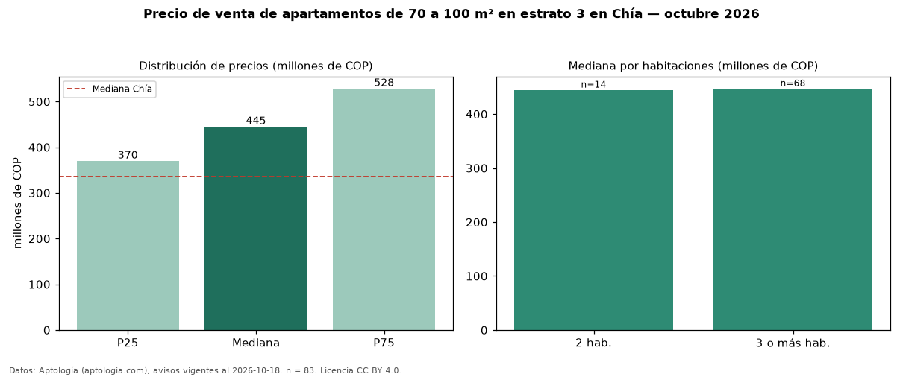

Precio de venta de apartamentos de 70 a 100 m² en estrato 3 en Chía — octubre 2026
Con 83 avisos vigentes, el precio mediano de apartamentos de 70 a 100 m² en estrato 3 en venta en Chía es COP 445 millones. Eso es 68 % más que la mediana de los apartamentos en estrato 3 en venta de Chía (COP 265 millones, n = 652); este segmento reúne el 13 % de esos avisos. Por metro cuadrado, la mediana es COP 5,35 millones/m² (n = 83), 3 % por encima de los apartamentos en estrato 3 en venta de Chía (COP 5,22 millones/m²). El área mediana anunciada es 87 m². El segmento con más oferta es el de 3 o más habitaciones (68 avisos, mediana COP 448 millones); pasar de 2 habitaciones a 3 o más habitaciones cambia la mediana +1 %. La administración mediana declarada es COP 424.000 al mes (n = 61). La mediana de todos los apartamentos en venta de Chía es COP 335 millones (+33 % de diferencia). La mitad central de los avisos va de COP 370 millones a COP 528 millones (razón 1,4), una dispersión moderada. Datos: Aptología (aptologia.com), CC BY 4.0 — https://www.aptologia.com/venta/chia. Archivos: PDF, CSV con las cifras y gráfica PNG.

| Avisos únicos | 83 |
|---|---|
| Percentil 25 | COP 370.000.000 |
| Mediana | COP 445.000.000 |
| Percentil 75 | COP 528.500.000 |
| Mediana por m² | COP 5.353.535 |
Fuente: avisos vigentes de portales inmobiliarios recopilados por Aptología, deduplicados (mínimo 30 avisos únicos por celda). Precios pedidos, no cerrados. Fecha: 2026-10-18.